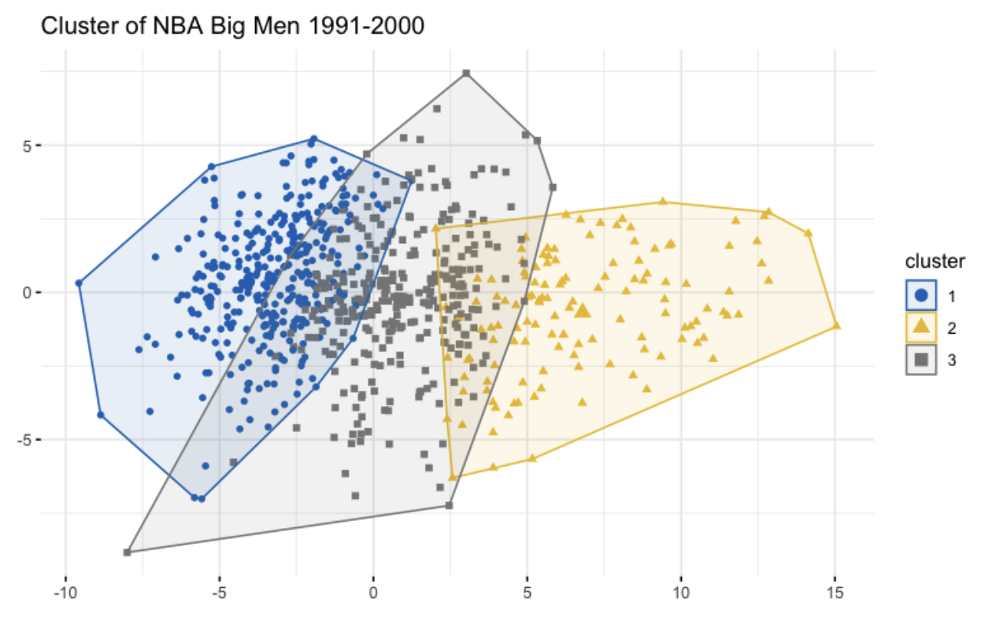
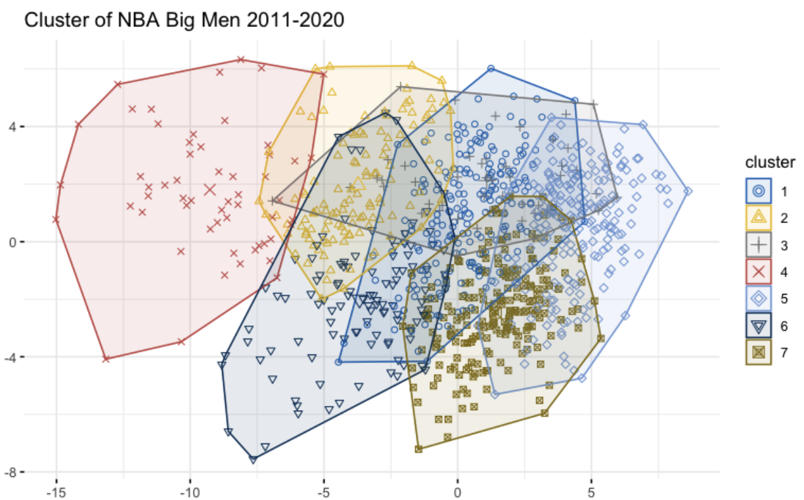
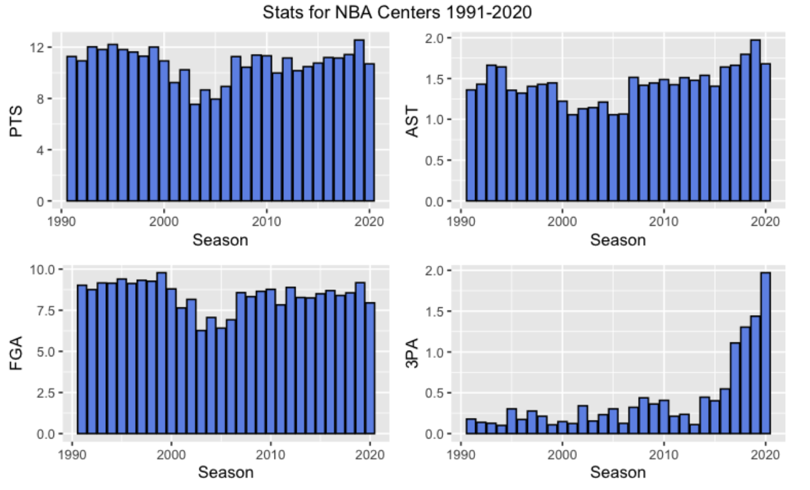

The Renaissance of the NBA Big Man
By Kenny Tran | March 30, 2021

We’re in the era of positionless basketball. Today, predefined position labels no longer reflect the playstle or utility a player provides to their team. Let’s look at the center position for example. NBA centers historically had two roles; dominate the low post with their size and strength and block shots and secure rebounds on the defensive end. However in today’s NBA, the role of a center is much more varied. For example, Nikola Jokic is his team’s primary playmaker and facilitates the offense, Brook Lopez is a sharpshooter that stretches the floor, and DeAndre Jordan exists to clog the paint and collect rebounds.
To highlight the increased responsibilities and playstyles of the modern NBA big, I decided to use the k-means clustering algorithm. A simple explanation of the k-means algorithm is that it splits a large dataset into k smaller datasets based on similarity. For example, if we had a dataset containing all Berkeley students, the algorithm could split it into smaller groups based on major.
The idea behind using this algorithm here is to observe the change in number of groups. If we hypothesize that NBA bigs have more unique roles, we should expect to see more groups for the recent decade (2011-2020) as opposed to an older one (1991-2000).
 As we can see, the number of clusters has more than doubled. Today, NBA bigs have more unique and specialized roles compared to the past. In the recent decade (the second chart), Cluster 3 consists of playmaking centers like Nikola Jokic and Draymond Green. Cluster 6 consists of rebounding specialists and low usage centers like Deandre Ayton and Derrick Favors and Cluster 4 consists of superstar bigs like Giannis Antetokounmpo and Anthony Davis. This is a stark contrast to the first chart where players were clustered by skill level instead. Cluster 2 represents superstar bigs like Patrick Ewing and Shaquille O'Neal, Cluster 1 represents rotation bigs like Rasheed Wallace and Cluster 3 represents low impact players. The reason why the players in 1991-2000 were clustered the way they were was due to the overwhelming similarities in their game, resulting in them being clustered by how well they played rather than how they played.
The question we are left with is what caused this change?
The figure above depicts the evolution of centers over time. The 90’s was dominated by legendary big men like Patrick Ewing and Hakeem Olajuwon. They dominated the offense with high skill and brute force. In the decade after, the role of the big man started to change. They were no longer the focal point of the offense and as a result, their average points and field goal attempts started to decrease.
In response to the changing game, a lot of centers in the 2000’s expanded their toolset and found niches to remain relevant and impactful. Mehmet Okur was one of the first bigs to embrace the three point shot and Boris Diaw played a large role in facilitating his team’s offense. These players were pioneers for an entire new breed of centers and most of the relevant bigs today have the ability to shoot, playmake, or both.
Alongside increases in three point attempts and assists, shot selection changed. As time progressed, most centers stopped forcing inefficient shots (i.e. no more Kwame Brown post ups). Offensively limited players like DeAndre Jordan and Tyson Chandler have relegated themselves to catching lobs and scoring off of simple pick and rolls. As a result, efficiency, measured by effective field goal percentage (eFG) and true shooting percentage (TS), increased over the years. The chart below shows the relationship between usage (USG) and TS of centers from 1991-2000 compared to 2011-2020: https://public.tableau.com/views/Book2_16161909167380/Dashboard1?:language=en&:display_count=y&publish=yes&:origin=viz_share_link
Looking at all the low usage centers (Quadrant 3 and 4), we can see that most of the bigs from 1991-2000 fall under the inefficient category for the reasons stated above. The most efficient high-volume centers (the right most points in Quadrant 1) tend to also be centers from the 2011-2020 decade.
Today, physicality in general is less emphasized. Centers no longer need to post up to dominate and we’re seeing them play further away from the basket. This change in style has led to a lot of backlash and criticism from retired bigs like Shaquille O’Neal who believes that modern NBA centers are “soft”. Although it’s true that centers today are less physical than their historical counterparts, the modern NBA big doesn’t need physicality to succeed. We’re in the renaissance of the NBA center as many of the elite bigs have evolved beyond the binary post-up and block shots archetype and they’re finding new ways to make an impact.